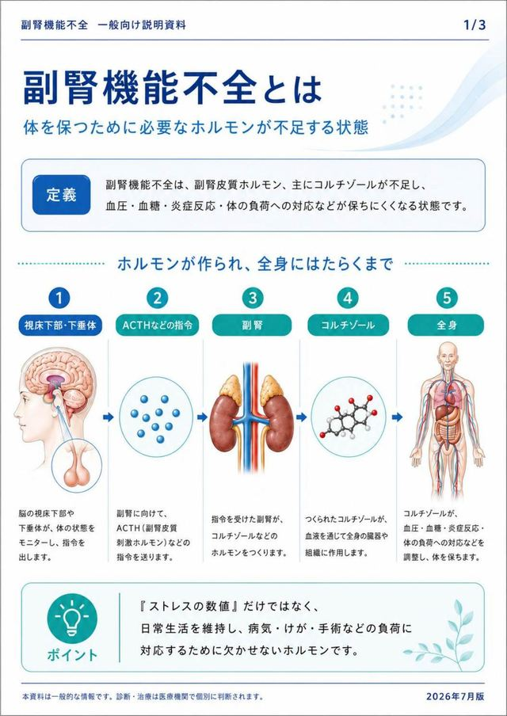
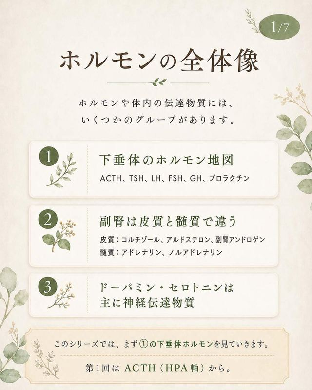
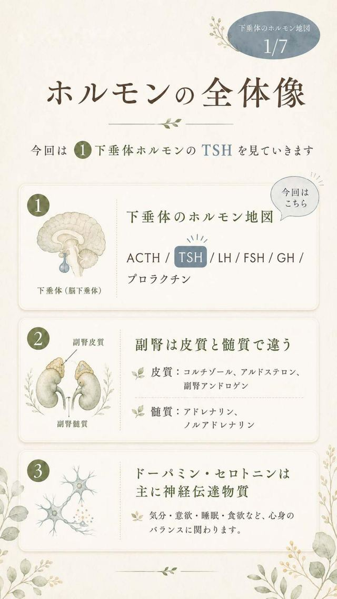
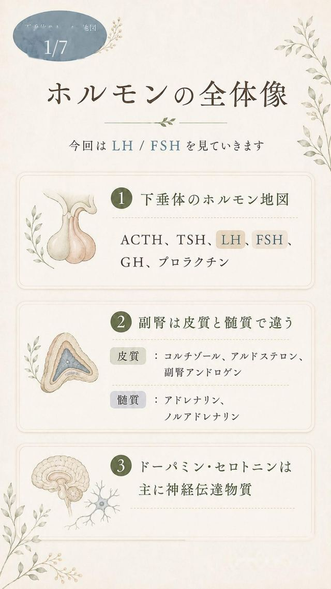
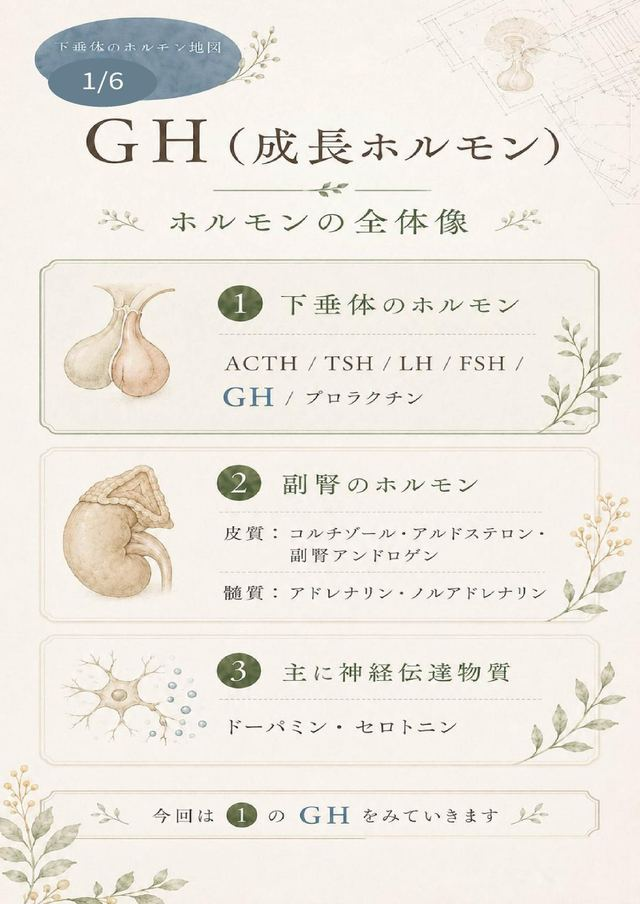
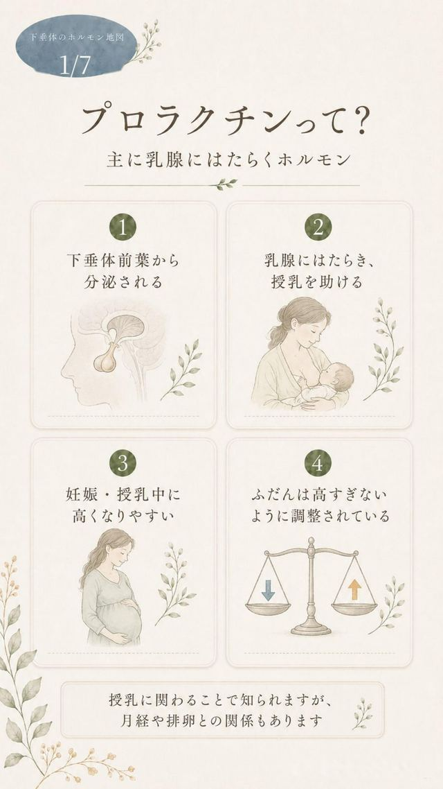
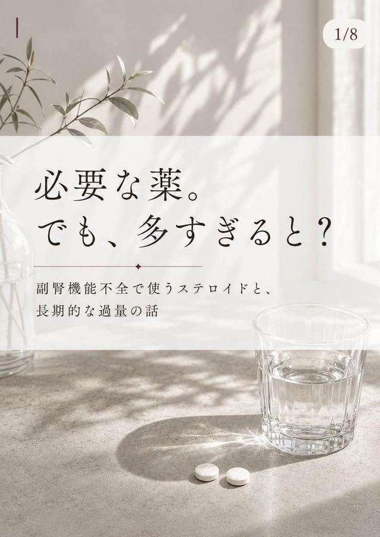

RESOURCES / 01
医療・疾患資料
MEDICAL RESOURCES
最終更新：2026年7月19日
副腎機能不全や下垂体ホルモン、治療や服薬について、一般の方にも理解しやすい形でまとめた資料です。患者本人による情報整理と制作をもとにしています。本資料は一般的な情報提供を目的としたもので、個別の診断や治療を代替するものではありません。
01 / ADRENAL INSUFFICIENCY BASICS
副腎機能不全の基礎
02 / PITUITARY HORMONE MAP
下垂体のホルモン地図
シリーズ形式で解説しています。 第1回から順番にご覧いただくと理解しやすい構成です。今後も回を追加予定です。
第1回

第2回

第3回

第4回

第5回

03 / TREATMENT & MEDICATION
治療と服薬

TREATMENT & MEDICATION
必要な薬。でも、多すぎると？
副腎機能不全で使うステロイドと、長期的な過量の話
副腎皮質ステロイドとアナボリックステロイドの違い、毎日の補充、一時的な増量、慢性的な過量の違いを整理した資料です。
PDFを見る↗